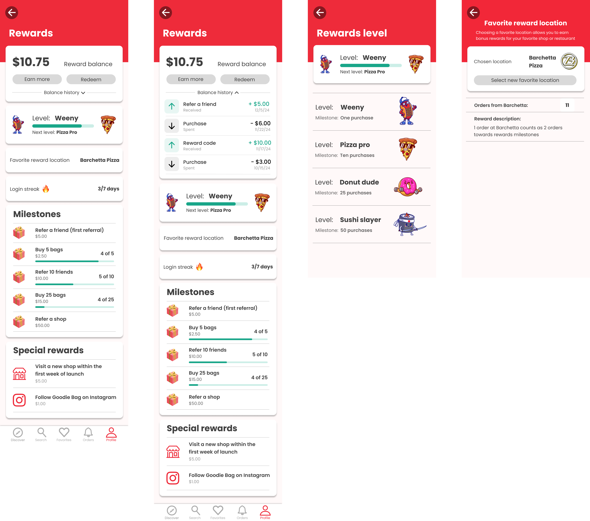
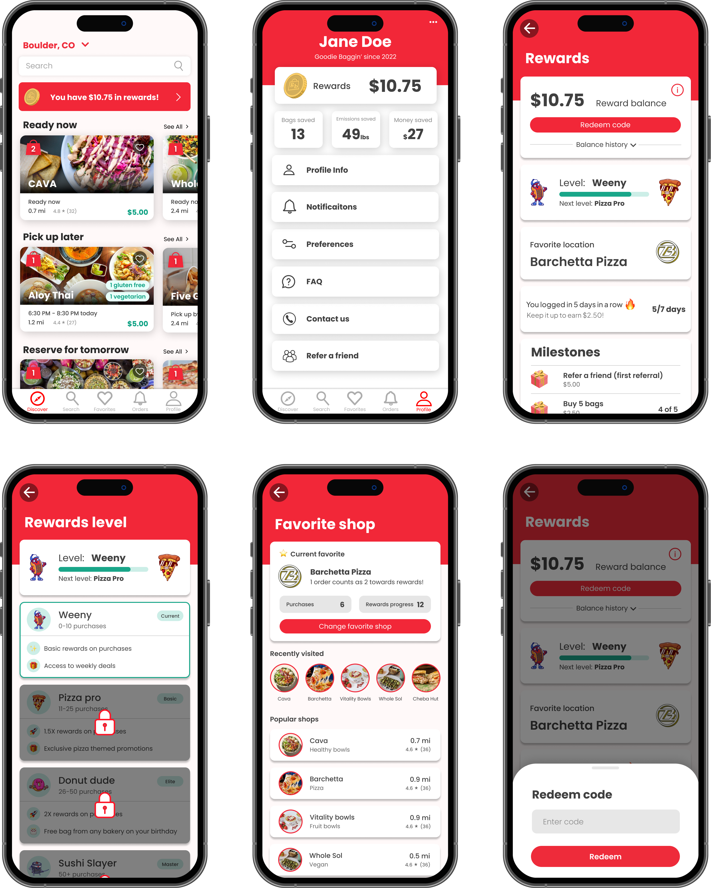

Goodie Bag Rewards – Product Case Study

Project introduction
Summary: For this project, I designed and delivered a comprehensive rewards system for Goodie Bag, an app-based marketplace for surplus food. Goodie Bag rewards create loyalty, boosting customer retention and increasing engagement through milestone-based cash back rewards for in-app purchases. With Goodie Bag serving over 90,000 active users, this rewards system significantly improves user retention and encourages repeat purchases through meaningful incentives.
Challenge
Goodie Bag faced several challenges that I addressed with this project. Although Goodie Bag has been growing rapidly, customer engagement and retention need improvement, with users requiring additional incentives to place orders more frequently. The previous app experience lacked sufficient engagement features that encouraged users to return regularly. Additionally, the company wanted to bolster its in-app referral system to acquire new customers through existing users while maintaining a low customer acquisition cost.
Research
User needs analysis
Based on seven phone calls with high and low frequency users, Goodie Bag customers reported overall positive experiences with the app, but expressed that a rewards program would boost its value to them. Users strongly preferred earning in-app credits or discounts through purchases and referrals, with a slight preference for smaller, more frequent rewards over larger, infrequent ones. They expressed that the most valuable reward systems in their lives came from coffee chains such as Starbucks and Dunkin’, food delivery apps, and credit card reward programs. Both high and low-frequency users showed enthusiasm for working towards milestones and referring friends if properly rewarded, suggesting significant growth potential through a well-designed loyalty program.
Competitive analysis
Analyzing reward systems across fast food chains and other sustainability platforms revealed key industry patterns and opportunities for differentiation. I examined Starbucks' tiered redemption structure, Chipotle's gamified challenges, and Panera's behavior-based personalization. This research informed several key design decisions, including the milestone reward structure and favorite location feature. This information allowed me to formulate the following "how might we" statements:
How might we…?
- Provide immediate value + long-term loyalty?
- Develop a win-win referral system?
- Seamlessly integrate rewards at checkout?
- Use gamification for engagement?
Initial designs
Problem statement
Goodie Bag users need a way to engage with the platform that incentivizes and rewards consistent purchases, increasing customer retention and satisfaction.
Low/ mid fidelity wireframes:
Starting the prototyping process, I created low-fidelity wireframes to structure the rewards experience and determine the placement of key elements. These initial designs focused on the core functionality: displaying reward balances, showing milestone progress, and integrating rewards into the checkout flow.

A/B testing
Prototyping
As I prototyped, I explored two distinct design directions (Version A and Version B) to address the rewards interface. Version A used a prominent red header with bold visual elements, while Version B took a more minimalist approach with a white background and simplified layout. These two versions would be tested with users to determine the most effective approach.
Methodology
I conducted structured usability tests with five participants to evaluate both versions of the prototype. Each participant was asked to review each version and provide feedback on clarity, information hierarchy, and overall impressions. The discussion guide included questions about what might be unclear or confusing, what information might be missing, and general preferences between the two versions. I alternated between which version was shown first in each test.
Version A
Version B

Findings
Version A:- Users responded positively to the colorful design and found it more engaging
- The rewards balance and history were highly visible and accessible
- The balance history toggle was appreciated for its simplicity
- Some users found the "login streak" feature slightly confusing without more explanation
- The milestone progress indicators were visually appealing and well-received
- Users appreciated the playful elements and emojis in this version
- Some users felt this version appeared "more boring" or too minimalist
- The larger images were described as potentially distracting by one participant
- Users appreciated the clearer explanation of the login streak feature
- One user noted missing information about how to redeem rewards
Overall: 5/5 users preferred version A, citing the colorful design and visual appeal.
User feedback
- “I would use the app more if there were rewards.” – Charelle
- “It would probably make me click on the app more.” – Charleen
- “A cool addition to have on the app.” – Chelsea
- “Good chance to try new shops.” – Chapin
- “Looks great. I am a fan.” – Celia
Final design
For my final design, I incorporated the strongest elements from both versions, with a primary foundation based on Version A (the clearly preferred design) while addressing the usability issues identified in testing.
Highlights
- Colorful dashboard, balance + favorite location
- Gamified levels (Weeny → Pizza Pro → Donut Dude → Sushi Slayer)
- Milestone trackers
- Seamless reward code redemption
- Balance history toggle
Reflection
If I had more time to work on this project, I would conduct additional user testing on the finalized design and explore opportunities to further personalize the rewards experience based on user behavior patterns. I would also investigate implementing push notifications for reward availability and expiration to increase redemption rates.
Conclusion
This project allowed me to design a comprehensive rewards system that addresses real business needs while providing substantial value to users. Through A/B testing and iterative design improvements, I created a solution that users found engaging and motivating. The colorful, gamified approach of Version A, combined with the functional clarity of certain elements from Version B, resulted in a final design that successfully balances visual appeal with usability. The Goodie Bag Rewards program has strong potential to significantly improve customer retention and satisfaction while driving new user acquisition through referrals.